Signal and Image Noise Models
This numerical tour show several models for signal and image noise. It shows how to estimate the noise level for a Gaussian additive noise on a natural image. It also shows the relevance of thresholding to remove Gaussian noise contaminating sparse data.
Contents
Installing toolboxes and setting up the path.
You need to download the following files: signal toolbox and general toolbox.
You need to unzip these toolboxes in your working directory, so that you have toolbox_signal and toolbox_general in your directory.
For Scilab user: you must replace the Matlab comment '%' by its Scilab counterpart '//'.
Recommandation: You should create a text file named for instance numericaltour.sce (in Scilab) or numericaltour.m (in Matlab) to write all the Scilab/Matlab command you want to execute. Then, simply run exec('numericaltour.sce'); (in Scilab) or numericaltour; (in Matlab) to run the commands.
Execute this line only if you are using Matlab.
getd = @(p)path(p,path); % scilab users must *not* execute this
Then you can add the toolboxes to the path.
getd('toolbox_signal/'); getd('toolbox_general/');
Additive Gaussian Noise Model
The simplest noise model consist in adding a realization of a zero mean random vector to a clean signal or image.
Load a clean image.
N = 128;
name = 'boat';
M0 = load_image(name,256);
M0 = rescale(crop(M0,N));
Load a clean signal.
n = 1024;
name = 'piece-regular';
f0 = rescale( load_signal(name,n) );
The simplest noise model is Gaussian white noise. Here we generate a noisy signal or image.
sigma = .1; M = M0 + randn(N,N)*sigma; f = f0 + randn(n,1)*sigma;
Display the signals.
clf; subplot(3,1,1); plot(f0); axis([1 n 0 1]); title('Clean signal'); subplot(3,1,2); plot(f-f0); axis([1 n -3*sigma 3*sigma]); title('Noise'); subplot(3,1,3); plot(f); axis([1 n 0 1]); title('Noisy signal');

Display the images.
clf; imageplot(M0, 'Clean image', 1,3,1); imageplot(M-M0, 'Noise', 1,3,2); imageplot(clamp(M), 'Noisy image', 1,3,3);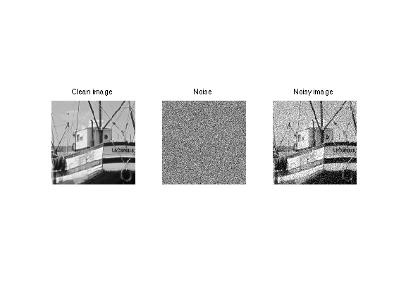
Display the statistics of the noise
nbins = 51; [h,t] = hist( M(:)-M0(:), nbins ); h = h/sum(h); subplot(3,1,2); bar(t,h); axis([-sigma*5 sigma*5 0 max(h)*1.01]);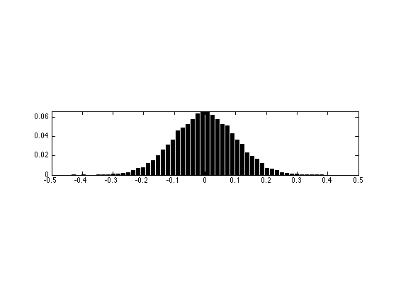
Additive Uniform Noise
A slightly different kind of noise is uniform in a given interval.
Generate noisy data with uniform noise distribution in [-a,a], with a chosen so that the variance is sigma.
a = sqrt(3)*sigma; M = M0 + 2*(rand(N,N)-.5)*a; f = f0 + 2*(rand(n,1)-.5)*a;
Display the signals.
clf; subplot(3,1,1); plot(f0); axis([1 n 0 1]); title('Clean signal'); subplot(3,1,2); plot(f-f0); axis([1 n -3*sigma 3*sigma]); title('Noise'); subplot(3,1,3); plot(f); axis([1 n 0 1]); title('Noisy signal');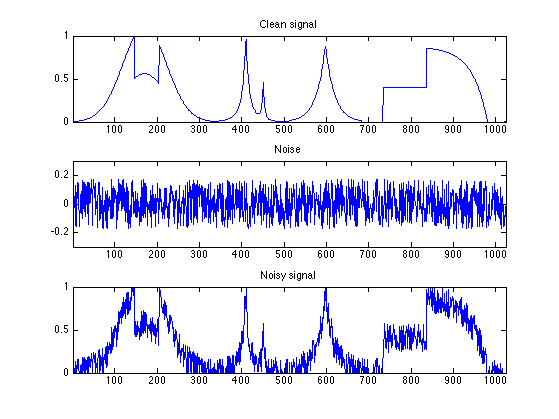
Display the images.
clf; imageplot(M0, 'Clean image', 1,3,1); imageplot(M-M0, 'Noise', 1,3,2); imageplot(clamp(M), 'Noisy image', 1,3,3);
Display the statistics of the noise
nbins = 51; [h,t] = hist( M(:)-M0(:), nbins ); h = h/sum(h); subplot(3,1,2); bar(t,h); axis([-sigma*5 sigma*5 0 max(h)*1.01]);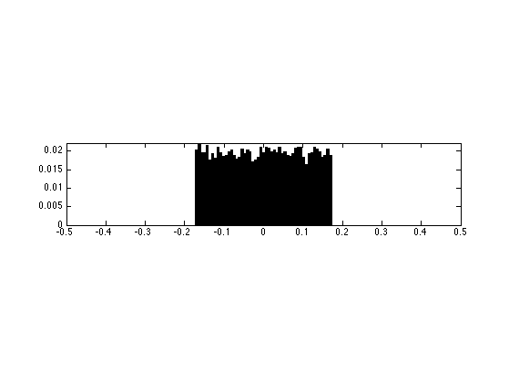
Impulse Noise
A very different noise model consist in sparse impulsions, generate by a random distribution with slowly decaying probability.
Generate noisy image with exponential distribution, with variance sigma.
W = log(rand(N,N)).*sign(randn(N,N)); W = W/std(W(:))*sigma; M = M0 + W;
Generate noisy signal with exponential distribution, with variance sigma.
W = log(rand(n,1)).*sign(randn(n,1)); W = W/std(W(:))*sigma; f = f0 + W;
Display the signals.
clf; subplot(3,1,1); plot(f0); axis([1 n 0 1]); title('Clean signal'); subplot(3,1,2); plot(f-f0); axis([1 n -3*sigma 3*sigma]); title('Noise'); subplot(3,1,3); plot(f); axis([1 n 0 1]); title('Noisy signal');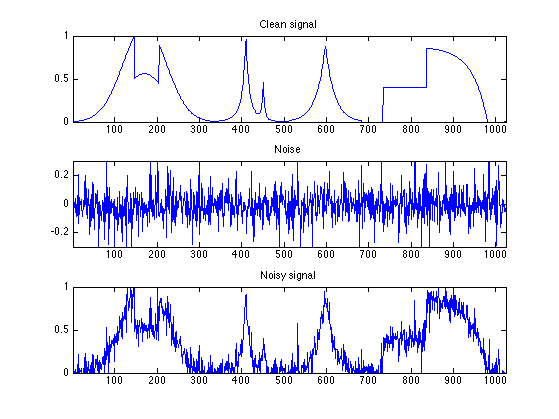
Display the images.
clf; imageplot(M0, 'Clean image', 1,3,1); imageplot(M-M0, 'Noise', 1,3,2); imageplot(clamp(M), 'Noisy image', 1,3,3);
Display the statistics of the noise
nbins = 51; [h,t] = hist( M(:)-M0(:), nbins ); h = h/sum(h); subplot(3,1,2); bar(t,h); axis([-sigma*5 sigma*5 0 max(h)*1.01]);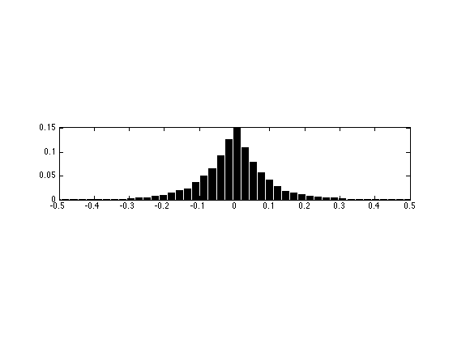
Thresholding Estimator and Sparsity
The idea of non-linear denoising is to use an orthogonal basis in which the coefficients x of the signal or image M0 is sparse (a few large coefficients). In this case, the noisy coefficients x of the noisy data M (perturbated with Gaussian noise) are x0+noise where noise is Gaussian. A thresholding set to 0 the noise coefficients that are below T. The threshold level T should be chosen judiciously to be just above the noise level.
First we generate a spiky signal.
% dimension n = 4096; % probability of spiking rho = .05; % location of the spike x0 = rand(n,1)<rho; % random amplitude in [-1 1] x0 = 2 * x0 .* ( rand(n,1)-.5 );
We add some gaussian noise
sigma = .1; x = x0 + randn(size(x0))*sigma;
Display.
clf; subplot(2,1,1); plot(x0); axis([1 n -1 1]); set_graphic_sizes([], 20); title('Original signal'); subplot(2,1,2); plot(x); axis([1 n -1 1]); set_graphic_sizes([], 20); title('Noisy signal');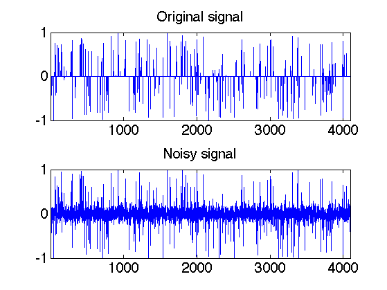
Exercice 1: (check the solution) What is the optimal threshold T to remove as much as possible of noise ? Try several values of T.
exo1;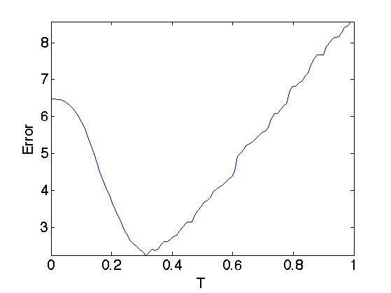
In order to be optimal without knowing in advance the amplitude of the coefficients of x0, one needs to set T just above the noise level. This means that T should be roughly equal to the maximum value of a Gaussian white noise of size n.
Exercice 2: (check the solution) The theory predicts that the maximum of n Gaussian variable of variance sigma^2 is smaller than sqrt(2*log(n)) with large probability (that tends to 1 when n increases). This is also a sharp result. Check this numerically by computing with Monte Carlo sampling the maximum with n increasing (in power of 2). Check also the deviation of the maximum when you perform several trial with n fixed.
exo2;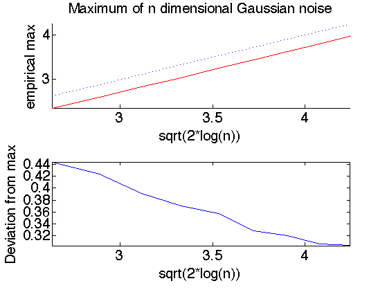
Estimating the noise level
In practice, the noise level sigma is unknown. For additive Gaussian noise, a good estimator is given by the median of the wavelet coefficients at the finer scale. An even simple estimator is given by the normalized derivate along X or Y direction
Load a clean image.
n = 256;
M0 = rescale(load_image('boat', n));
Generate a noisy image.
sigma = 0.06; M = M0 + randn(n,n)*sigma;
First we extract the high frequency residual.
H = M; H = (H(1:n-1,:) - H(2:n,:))'/sqrt(2); H = (H(1:n-1,:) - H(2:n,:))'/sqrt(2);
Display.
clf; imageplot(clamp(M), 'Noisy image', 1,2,1); imageplot(H, 'Derivative image', 1,2,2);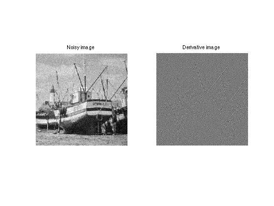
Histograms.
[h,t] = hist(H(:), 100); h = h/sum(h);
Display histogram.
clf; bar(t, h); axis([-.5 .5 0 max(h)]);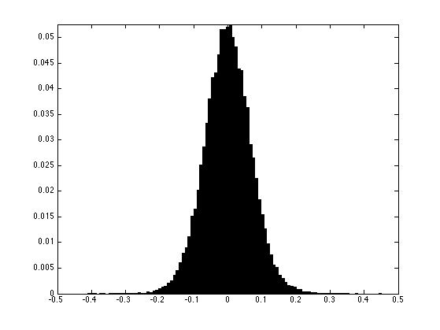
The mad estimator (median of median) must be rescaled so that it gives the correct variance for gaussian noise.
sigma_est = mad(H(:),1)/0.6745; disp( strcat(['Estimated noise level=' num2str(sigma_est), ', true=' num2str(sigma)]) );
Estimated noise level=0.066235, true=0.06